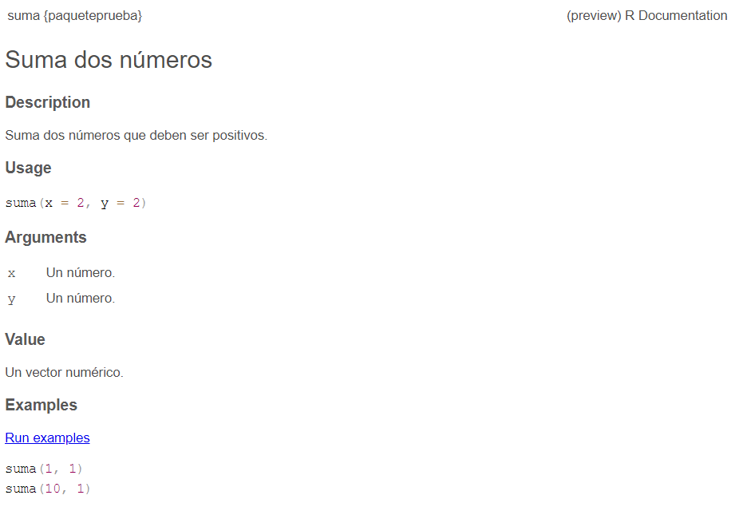
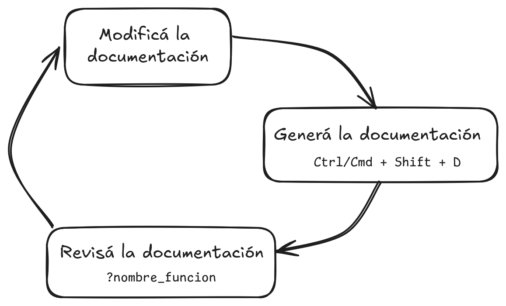

browseVignettes("tidyr")
vignette("nest")12 Documentando paquetes y funciones
12.1 Objetivos de aprendizaje
- Describir el propósito de documentar código y paquetes
- Documentar funciones con
roxygen2 - Crear un README y una viñeta para la documentación de paquetes
- Crear la web del paquete
12.2 ¿Por qué necesitamos documentación?
Igual que el control de versiones rastrea qué cambios haces y por qué, la documentación del código y de los paquetes informa a las personas en tu equipo y futuras y futuros usuarios lo que hace el código y por qué.
Con el tiempo, los lenguajes de programación se han hecho más “legibles para el ser humano”: una persona con mucha experinecia podría leer el código y entender lo que hace. Pero aunque entienda lo que hace el código, puede que no sea obvio por qué lo hace. Los lenguajes de programación vienen con herramientas incorporadas para agregar comentarios y documentación que no son leídos por la computadora, sino que existen únicamente para ayudarte a vos y otras personas a describir y comprender el código. Una buena documentación es clave para la apertura, la reproducibilidad y la sostenibilidad del proyecto.
La buena documentación se da en todas las escalas del código: a nivel de objetos individuales, funciones y test, así como de todo el paquete. En este capítulo, describimos el flujo de trabajo de la documentación de un paquete como parte de su desarrollo y esbozamos los componentes de un paquete bien documentado.
12.3 Documentación de funciones
La documentación de funciones en R es posiblemente la más usada y accesible. Podemos revisarla con ?unafuncion o help("unafuncion") y para quienes les gusta los atajos de teclado, con F1 si el cursor está en el nombre de la función. R Base proporciona una forma estándar de documentar un paquete donde cada función se documenta en un tema o topic, un archivo .Rd (“R documentation”) en el directorio man/. Si bien los archivos .Rd utilizan una sintaxis basada en LaTeX no es necesario aprenderla ya que el paquete roxigen2 hace gran parte del trabajo.
La mayor ventaja es que podemos escribir la documentación en el mismo archivo .R y dejarle la tarea de generar los archivos .Rda roxigen2.
#' Suma dos números
#'
#' Suma dos números .
#'
#' @param x Un número.
#' @param y Un número.
#'
#' @returns Un vector numérico.
#'
#' @examples
#' suma(1, 1)
#' suma(10, 1)
#'
#' @export
suma <- function(x = 2, y = 2) {
x + y
}La manera en que veamos esta documentación depende de donde estemos ya que los archivos .Rd son la base de lo que vemos en la pestaña help de RStudio, los pdf de cada paquete, su página web, etc.
Se puede insetar un esqueleto de la documención, para eso nos paramos sobre la definición de la función y vamos a Code > Insert roxygen skeleton en RStudio. Este comando añade los componentes por defecto de la función para no empezar a escribir la documentación desde cero.
Así es como se ve la documentación de nuestra función suma().

En resumen hay cuatro pasos en el flujo de trabajo básico de roxygen2:
- Agregar comentarios de roxygen2 a losr archivos .R de funciones.
- Ejecutar
devtools::document()oCtrl/Cmd + Mayús + Dpara convertir los comentarios de roxygen2 en archivos .Rd. - Revisá la documentación con
?function. - Modificá y repetí hasta que la documentación tenga el aspecto que necesites.

12.3.1 Sintaxis de roxigen2
Ahora si podemos ver en detalle como suar roxigen2. Lo primero que habrás notado es que todas las líneas de la documentación comienzan con #'. Además algunas líneas tienen este patrón: @tagname tagvalue. Es decir, una etiqueta y un valor asociado, por ejemplo @param es una etiqueta y x es el valor asociado. Otra etiqueta importante es @export que es la que indica que la función se exporta, es decir, queda disponible para que pueda usarse al cargar el paquete.
12.3.1.1 Título, descripción, detalles
La introducción de la documentación incluye un título, una descripción y, opcionalmente, detalles de la función. Aunque es posible utilizar etiquetas explícitas en la introducción, solemos utilizar etiquetas implícitas cuando es posible:
El título se genera con la primera frase. Debe escribirse en mayúsculas, sin punto final y seguido de una línea en blanco. El título se muestra en varios índices de funciones (por ejemplo,
help(paquete = «algúnpaquete»))y es lo que una persona suele ver cuando navega por varias funciones.La descripción se genera con el párrafo siguiente. Se muestra en la parte superior de la documentación y debe describir brevemente las características más importantes de la función. Escribir la descripción puede resultar difícil en el caso de funciones sencillas, ya que puede parecer que se está repitiendo el título de la función. Intentá encontrar otra manera de describir la función si es posible.
Los detalles adicionales son cualquier cosa después de la descripción. Los detalles son opcionales, pero pueden ser de cualquier longitud, por lo que resultan útiles para profundizar en algún aspecto importante de la función. Tené en cuenta que, aunque los detalles vienen justo después de la descripción en la introducción, aparecen mucho más adelante en la documentación renderizada.
12.3.1.2 Argumentos
Documentar los argumentos de la función es probablemente la mayor parte del trabajo. Para esto vamos a usar la etiqueta @param (que viene de parámetro, otra manera de decir argumento). Es necesario documentar todos los argumentos en el orden en el que aparecen en la función.
La documentación de cada argumento incluye una descripción breve del imput permitido y que rol cumple en la función. Por ejemplo, estos son los argumentos de la función sd()
#' @param x a numeric vector or an **R** object but not a [factor] coercible to numeric by `as.double(x)`.
#' @param na.rm logical. Should missing values be removed?Mencionan que tipo de objeto requiere cada uno y una descripción. Es recomendable también mencionar cual es el valor por defecto si lo tiene y si el argumento es opcional.
Cuando 2 o más argumentos están muy relacionados (por ejemplo en la función suma()) es recomendable documentarlos juntos de la siguiente manera:
#' @param x,y Un par de valores numéricos.12.3.1.3 Resultado
Documentar el resultado de una función es tan importante como documentar sus argumentos. Para esto usamos la etiqueta @return y aparece en la documentación bajo el título Value. Aquí la prioridad es describir la forma general del resultado, es decir, qué tipo de objeto es y sus dimensiones (si eso tiene sentido). Por ejemplo, si la función devuelve un vector, describiremos de que tipo y su longitud, o si devuelve un data.frame, se puede describir los nombres y tipos de las columnas y el número previsto de filas.
Por ejemplo esta es la sección correspondiente para la función read_csv() :
#' @return
#' A [tibble()]. If there are parsing problems, a warning will alert you. You can retrieve the full details by calling [problems()] on your dataset.12.3.1.4 Ejemplos
Esta sección de la documentación es importantísima porque le permite a cualquier nuevo usuario entender en detalle como funciona la función. Usaremos la etiqueta @examples (en plural!).
El principal dilema de los ejemplos es que deben satisfacer dos requisitos al mismo tiempo:
El código de ejemplo debe ser legible y realista.
El código de ejemplo debe ejecutarse sin errores.
Usamose ejemplos para mostrar en primer lugar el funcionamiento básico de la función y, a continuación, para destacar las propiedades más importantes. Intentá centrarte en las aplicaciones más importantes sin entrar en todos los detalles. Si te encontrás escribiendo ejemplos muy largos es posible que sea hora de revisarlos.
12.3.2 Documentar datos
Los datos que forman parte del paquete también deben documentarse. Documentar datos es como documentar una función con algunas pequeñas diferencias. En lugar de documentar los datos directamente, se documenta el nombre del conjunto de datos y se guarda en un archivo .R en la carpeta R/. Por ejemplo, el bloque roxygen2 utilizado para documentar los datos de pingüinos tiene este aspecto:
#' Medidas de tamaño de pingüinos adultos en busca de comida cerca de la estación Palmer en la Antártica.
#'
#' Incluye medidas para: especie de pingüino, isla dentro del Archipiélago de Palmer, tamaño (largo de aleta, masa corporal, dimensiones de pico) y sexo.
#'
#' @format Un tibble con 344 filas y 8 variables
#'
#'\describe{
#' \item{especie}{un factor que indica la especie de pingüino (Adelia, Barbijo y Papúa)}
#' \item{isla}{un factor que indica la isla en el archipiélago de Palmer (Biscoe, Dream o Torgersen)}
#' \item{largo_pico_mm}{un número que indica el largo del pico (milímetros)}
#' \item{alto_pico_mm}{un número que indica el alto del pico (milímetros)}
#' \item{largo_aleta_mm}{un entero que indica el largo de la aleta (milímetros)}
#' \item{masa_corporal_g}{un entero que indica la masa corporal (gramos)}
#' \item{sexo}{un factor que indica el sexo del pingüino (hembra, macho)}
#' \item{anio}{un entero que indica el año estudiado (2007, 2008 o 2009)}
#'}
#'
#'@source Pingüinos Adelia: Palmer Station Antarctica LTER and K. Gorman. 2020. Structural size measurements and isotopic signatures of foraging among adult male and female Adélie penguins (Pygoscelis adeliae) nesting along the Palmer Archipelago near Palmer Station, 2007-2009 ver 5. Environmental Data Initiative https://doi.org/10.6073/pasta/98b16d7d563f265cb52372c8ca99e60f.
#'
"pinguinos"- Elegí al menos una de las funciones que creaste durante la sección funciones.
- Agregala al paquete de prueba en un nuevo archivo
.Rusando el flujo de trabajo que vimos. - Documentá la función y practicá el flujo de documentación:
Ctrl+Shif+Dpara documentar y luegoCtrl+Shif+Lpara cargar el paquete, revisar la documentación y mejorarla
12.4 Viñetas
Todo lo que hemos dicho hasta ahora sobre la documentación se aplica a todos los proyectos de programación en casi cualquier lenguaje. Las “viñetas”, en cambio son un tipo de documentación distintivo de R: describen en gran detalle algún aspecto de tu paquete con ejemplos de uso y explicaciones detalladas.
La función browseVignettes() te permite explorar las viñetas existentes en los paquetes que tenés instalados. Si corrés la función sin argumentos se abrirá una ventana de en tu navegador con una lista de las viñetas disponibles, mientras que browseVignettes("nombrepaquete") mostrará las viñetas de un paquete concreto. También podés llamar directamente a una viñeta si conoces su nombre con vignette("vignettename") que se mostrará en la pestaña help.
Las viñetas también aparecerán como artículos en la página web del paquete (que aprenderemos a crear al final de esta sección), esta es una gran manera de consultarlas porque no requiere la instalación del paquete o correr su código. Por ejemplo en este link se encuentra la misma viñeta de tidyr que vimos recién.
12.4.1 Crear una viñeta
Una vez más, usethis tiene una función útil para ayudarnos a crear viñetas. La función usethis::use_vignette() toma el título de la viñeta y crea un breve documento R Markdown a modor de plantilla en la carpeta vignettes/.
Además añade las dependencias necesarias a DESCRIPTION, es decir, añade knitr al campo VignetteBuilder y añade tanto knitr como rmarkdown a Suggests (veremos más sobre dependencias en la próxima sección). Y también añade patrones a .gitignore para garantizar que los archivos creados como efecto secundario de la previsualización de tus viñetas se mantengan fuera del repositorio.
Sumemos una viñeta a nuestro paquete de prueba:
usethis::use_vignette("viñeta_prueba")Y de paso agreguemos algo de contenido, por ejemplo como usar la función suma().
---
title: "viñeta_prueba"
output: rmarkdown::html_vignette
vignette: >
%\VignetteIndexEntry{viñeta_prueba}
%\VignetteEngine{knitr::rmarkdown}
%\VignetteEncoding{UTF-8}
---
```{r, include = FALSE}
knitr::opts_chunk$set(
collapse = TRUE,
comment = "#>"
)
```
```{r setup}
library(paqueteprueba)
```
Esta es una viñeta de prueba. Podemos mostrar como usar la función `suma()`
```{r}
suma(2, 2)
```Normalmente, kniteariamos este archivo bastante seguido para ver como va quedando la viñeta, sin embargo, si intentamos hacer eso ahora nos dará un error “No existe el paquete ‘paqueteprueba”’. Esto puede parecerte raro porque estamos creando el paquete, claro que existe! Pero, resulta que crear la documentación y cargarlo con Ctrl+Shif+L no es suficiente, necesitamos instalarlo.
Como estamos en el contexto de desarrollar el paquete, la instalación no se hace con install.packages(). Necesitamos instalar el paquete usando el mismo código fuente que estamos desarrollando y para eso podemos usar el atajo de teclado Ctrl+Shif+B (que viene de build o construir en inglés).
Ahora si, podremos knitear nuestra viñeta que por ahora esbastante corta:

Una vez que tengas el borrador de la viñeta, el flujo de trabajo es sencillo:
Empezá a añadir fragmentos de texto y código a la viñeta. Probá el código para asegurarte de que corra y genere los resultados que querés mostrar.
Knitea toda la viñeta periódicamente.
Repetí los pasos hasta que la completes.
Al trabajar con el formato RMarkdown se puede hacer uso de markdown para dar formato al texto y contenido.
Al escribir una viñeta, estás enseñando a alguien a utilizar tu paquete. Tenés que ponerte en el lugar de quien la leerá y asumilar que esa persona es novata. Esto puede resultar difícil, porque es fácil olvidar todos los conocimientos que ya se han interiorizado y todas las desiciones que tomaste sobre tu paquete. Te recomendamos que le pidas a alguien más leer la viñeta y te de feedback para mejorarla.
Completá la viñeta del paquete de prueba
Si hiciste el ejercicio anterior, nuestro paquete de prueba ahora no solo tiene la función suma(), tiene varias más.
Completá la viñeta agregando ejemplos y explicaciones sobre como se usan las funciones y para que sirven.
No te olvides de knitear para ver el resultado.
12.5 README
El README es es la puerta de entrada a tu paquete, incluye las instrucciones sobre cómo instalarlo y ejemplos de cómo utilizarlo.
La función usethis::use_readme_rmd() crea un documento R Markdown con algunas secciones y texto estándar que podemos usar como base para crear un documento útil y descriptivo.
use_readme_rmd()R Markdown vs. Mardown
Lee la ayuda de use_readme_rmd() y use_readme_md(). ¿Qué diferencias hay entre archivos .Rmd y .md? ¿Por qué usarías uno u otro para el README?
GitHub trata al archivo README.md de forma especial, mostrándolo en la pestaña principal del repositorio. El README creado por use_readme_rmd() entonces, debe ser kniteado antes de subirlo al repositorio remoto.
El encabeza YAML que incluye el README output: github_document indicará a knitr que cree una salida Markdown para GitHub en lugar del HTML por defecto. Para esto podés usar el botón Knit en el menú situado encima del editor, o ejecutá devtools::build_readme() en la consola.
Edita y knitea el README del paquete de prueba
- Editá
README.Rmdpara incluir una descripción del paquete de prueba, su instalación y un ejemplo de su uso. - kniteá el
README.Rmdpara que crea la salidaREADME.md.
12.6 Website
En este punto nuestro paquete de prueba tiene sus funciones documentadas, incluye una viñeta que detalla el uso de las funciones y un README con la información más importante que necesita cualquier persona para comenzar a usarlo.
El objetivo ahora es construir una página web para el paquete de manera programática usando todo lo anterior. Para esto usaremos el paquete pkgdown. Para darte una idea de lo que estamos hablando podés visitar la pagína web del paquete pkgdown: https://pkgdown.r-lib.org/.
Si al ver el ejemplo asumiste que esto lleva muchísimo tiempo, la realidad no podría ser más diferente. Con un par de funciones podemos tener una página web funcionando. La primera función es por supuesto de usethis:
usethis::use_pkgdown()Al ejecutar esta función veremos algo así:
✔ Setting active project to 'C:/Users/tonin/Downloads/paqueteprueba'
✔ Adding '^_pkgdown\\.yml$', '^docs$', '^pkgdown$' to '.Rbuildignore'
✔ Adding 'docs' to '.gitignore'
✔ Writing '_pkgdown.yml'
• Modify '_pkgdown.yml'La función hace todo lo siguiente:
Crea
_pkgdown.yml, el archivo de configuración principal de la web. Podrías revisar este archivo y cambiar cosas pero no hay necesidad inmediata de cambiar o añadir nada.Añade varios archivos a
.Rbuildignore, para evitar que algunos archivos y directorios específicos de pkgdown se incluyan en tu paquete.Añade
docs, el destino por defecto para un sitio renderizado, a.gitignore. Hacemos esto porque esperamos que la web definitiva se construya y publique usando GitHub Actions y Pages. Esto significa que el sitio web renderizado en docs/ sólo sirve como vista previa local.pkgdown::build_site()es una función a la que llamarás repetidamente, para volver a renderizar tu sitio localmente.
Además de revisar la web de esta manera también es posile hacer click en el archivo docs/index.html en el explorador.
Una GitHub Action o “acción” de GitHub es un script que corre directamente en GitHub y puede cumplir muchas funciones. Se pueden construir a mano o aprovechar las plantillas que ya existen.
Estas acciones además pueden programarse para que se ejecuten de manera automática en un determinado horario, cada vez que se hace un commit al repositorio remoto o en otras circunstancias.
Para publicar la web necesitamos hacer commits y push al repositorio remoto. A continuación, una “acción” de GitHub construirá y publicará la web en una url con nombre <nombreusuario>.github.io/<nombrepaquete>. Los pasos para llegar a este punto son varios y si bien se pueden hacer a mano vamos a usar una función de usethis para automatizar todo.
usethis::use_pkgdown_github_pages()✔ Writing '_pkgdown.yml'
• Modify '_pkgdown.yml'
✔ Initializing empty, orphan 'gh-pages' branch in GitHub repo paocorrales/paqueteprueba'
✔ GitHub Pages is publishing from:
• URL: 'https://paocorrales.github.io/paqueteprueba/'
• Branch: 'gh-pages'
• Path: '/'
✔ Creating '.github/'
✔ Adding '^\\.github$' to '.Rbuildignore'
✔ Adding '*.html' to '.github/.gitignore'
✔ Creating '.github/workflows/'
✔ Saving 'r-lib/actions/examples/pkgdown.yaml@v2' to '.github/workflows/pkgdown.yaml'
• Learn more at <https://github.com/r-lib/actions/blob/v2/examples/README.md>.
✔ Recording 'https://paocorrales.github.io/paqueteprueba/' as site's url in '_pkgdown.yml'
✔ Adding 'https://paocorrales.github.io/paqueteprueba/' to URL
✔ Setting 'https://paocorrales.github.io/paqueteprueba/' as homepage of GitHub repo 'paocorrales/paqueteprueba'Veamos qué hace realmente use_pkgdown_github_pages():
Inicializa una rama vacía en tu repositorio de GitHub, llamada gh-pages (por “GitHub Pages”). La rama gh-pages sólo vivirá en GitHub (no hay razón para crearla en tu repositorio local) y representa una versión paralela del paquete. Los únicos archivos rastreados en gh-pages son los que constituyen el sitio web de tu paquete (los archivos que ves localmente en la carpeta
docs/).Activa GitHub Pages en el repositorio y le dice que aloje un sitio web desde los archivos encontrados en la rama gh-pages.
Copia el archivo de configuración de la GitHub Action que hace construye y publica la web. El archivo aparece en tu paquete como
.github/workflows/pkgdown.yaml.Añade la URL de tu sitio como página de inicio de tu repositorio de GitHub.
Añade la URL de tu sitio a
DESCRIPTIONy_pkgdown.yml.
Después de ejecutar con éxito use_pkgdown_github_pages(), deberías poder visitar el nuevo sitio en la url.
Para seguir mejorando la web y darle un estilo propio te recoemndamos leer las viñetas del paquete pkgdown arrancando por Customise your site.
Si aún no lo hiciste, es hora de crear la web del paqueteprueba con el que venimos trabajando.
Es posible que al hacerlo encuentres cosas para mejorar en el README o en la documentación de alguna de las funciones. En ese caso modificá los archivos necesarios y seguí el flujo de trabajo que vimos antes de hacer commit y push al repositorio remoto. Esto es:
- Si cambias la documentación: Usá
Ctrl+Shift+Dpara construir la documentación de nuevo. - Si cambiás cosas en el README: knitea el archivo .Rmd para generar el .md.
12.7 Construyendo un paquete de R paso a paso
A esta altura seguramente ya te imaginás que sigue. Es hora de generar la documentación del paquete que lee y analiza datos meteorológicos (¿ya tiene nombre?).
- Agreguen las funciones que crearon en el ejercicio de funciones y generen su documentación
- Usando como base los datos meteorológicos que descargaron agreguen datos al paquete y documentenlo. Estos datos servirán para generar ejemplos en la documentación de las funciones.
- Agreguen una viñeta que muestre de manera extendida como se usan las funciones del paquete.
- Actualicen el README
- Creen el website para el paquete.
De nuevo, esto es un trabajo en equipo por lo que esperamos ver aportes (commits) de ambos miembros del equipo. Pueden dividirse el trabajo: cada persona documenta algunas funciones, alguien se ocupa del README, alguien de la viñeta, etc.
Recomendaciones:
- Siempre arranquen a trabajar haciendo un pull para actualizar la versión del repo local con el remoto.
- No modifiquen archivos que la otra persona está usando. Si hacen esto, al hacer commits habrá problemas para mergear tu versión y la de tu compañere.
- Hagan commits pequeños, un commit por actividad.